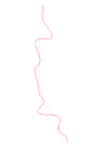
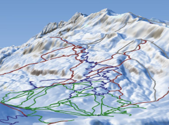
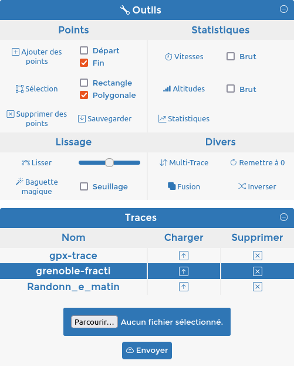
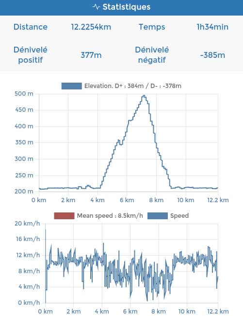
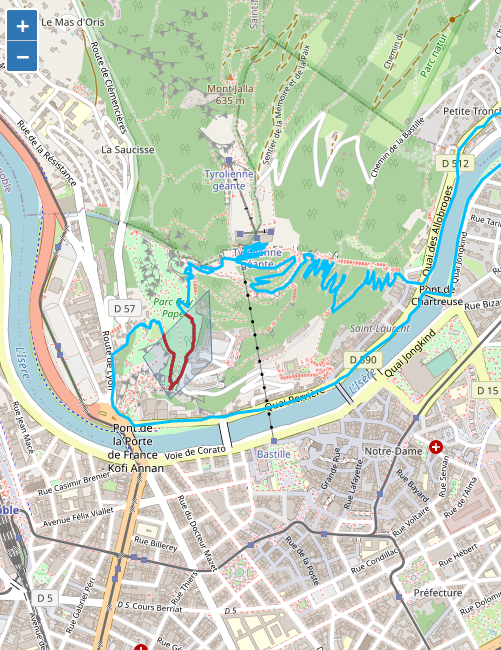
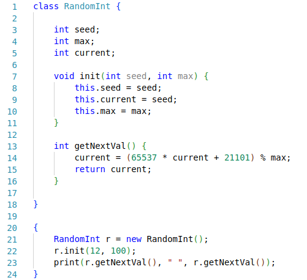
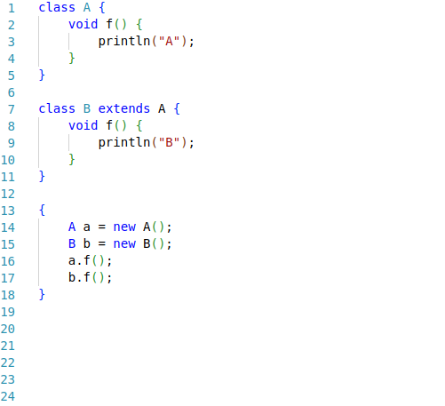
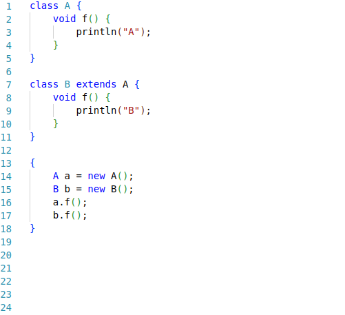
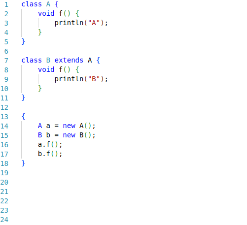

Contact
ryan.delayat@grenoble-inp.org
Expériences
> Stage en développement et analyse de données à
Lichens, 10 semaines, été 2023
Durant ce stage, j'ai développé une application
web permettant de visualiser et d'exploiter des fichiers résultant
de mesures sur une carte de façon interactive. J'ai également déployé cette
application sur un VPS permettant aux membres de l'entreprise d'y accéder facilement.
> Déformation des éléments linéaires, INRIA,
Février - Mai 2023, une demi-journée par semaine
Ce projet prend place dans le contexte du cours
"Introduction à la recherche en laboratoire" de l'Ensimag. Le but de ce travail
est de trouver une méthode générale permettant de déformer les éléments linéaires
cartographiques (route, piste de ski, rivière, chemin...). J'ai pu appliquer mes résultats
au cas du dessin de pistes de ski à partir de données cartographiques, en voulant approcher le style traditionnel de
l'atelier Novat.


Ma présentation
Projets
> Création d'une application d'édition de traces GPS
Cette application permet de créer une trace GPS en partant de 0, ou d'en modifier
une déjà existante. Elle possède quelques outils,
comme la sélection par zone, le lissage de sections, le calcul de statistiques simples (par exemple la vitesse
ou le dénivelé au cours du temps), et la correction
automatique de points "mal localisés". Il est possible de créer un compte et de mettre en ligne ses propres
traces.



Ce projet utilise Python avec Django pour le back-end et Javascript en front, avec Leaflet pour l'affichage des
données cartographiques.
> Réalisation d'un compilateur pour un sous-langage de Java
Il s'agit d'un projet de génie logiciel effectué durant le mois de janvier 2023 en
équipe de 5 dans le cadre scolaire. Nous avons réalisé un compilateur
pour un sous-langage de Java, permettant de compiler des codes plus ou moins complexes.

 


> Création d'une bibliothèque d'interfaces graphique
Ce projet a pour but de créer une bibliothèque permettant à un programmeur de
réaliser des interfaces graphiques, avec par exemple la création de fenêtre, de boutons, de sliders...
CV
Pour voir mon CV, cliquez sur ce bouton :
Ouvrir